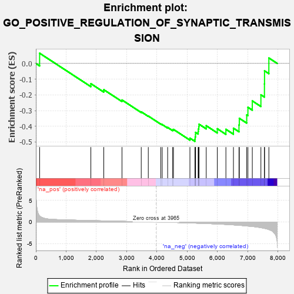
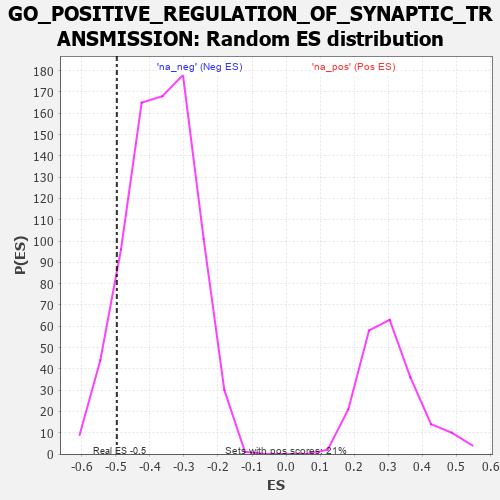

| | | Dataset | 7d |
| Phenotype | NoPhenotypeAvailable |
| Upregulated in class | na_neg |
| GeneSet | GO_POSITIVE_REGULATION_OF_SYNAPTIC_TRANSMISSION |
| Enrichment Score (ES) | -0.49658325 |
| Normalized Enrichment Score (NES) | -1.3483084 |
| Nominal p-value | 0.09974747 |
| FDR q-value | 0.40414116 |
| FWER p-Value | 1.0 |
Table: GSEA Results Summary

Fig 1: Enrichment plot: GO_POSITIVE_REGULATION_OF_SYNAPTIC_TRANSMISSION
Profile of the Running ES Score & Positions of GeneSet Members on the Rank Ordered List
| PROBE | GENE SYMBOL | GENE_TITLE | RANK IN GENE LIST | RANK METRIC SCORE | RUNNING ES | CORE ENRICHMENT | | 1 | ADCY8 | | | 124 | 1.418 | 0.0651 | No |
| 2 | FMR1 | | | 1816 | 0.334 | -0.1288 | No |
| 3 | CREB1 | | | 2243 | 0.269 | -0.1672 | No |
| 4 | NR2E1 | | | 2844 | 0.177 | -0.2327 | No |
| 5 | CDK5 | | | 3480 | 0.080 | -0.3081 | No |
| 6 | NF1 | | | 3713 | 0.040 | -0.3350 | No |
| 7 | ABL1 | | | 4125 | -0.027 | -0.3853 | No |
| 8 | SYT12 | | | 4172 | -0.037 | -0.3890 | No |
| 9 | ADRB2 | | | 4352 | -0.068 | -0.4076 | No |
| 10 | NPTN | | | 4519 | -0.098 | -0.4229 | No |
| 11 | NTRK2 | | | 4543 | -0.104 | -0.4199 | No |
| 12 | DRD2 | | | 5088 | -0.221 | -0.4758 | No |
| 13 | SSH1 | | | 5254 | -0.258 | -0.4819 | Yes |
| 14 | PTEN | | | 5262 | -0.261 | -0.4679 | Yes |
| 15 | RIMS2 | | | 5272 | -0.265 | -0.4540 | Yes |
| 16 | EPHA4 | | | 5273 | -0.265 | -0.4389 | Yes |
| 17 | ITPR3 | | | 5361 | -0.288 | -0.4334 | Yes |
| 18 | MPP2 | | | 5367 | -0.288 | -0.4177 | Yes |
| 19 | GRIN1 | | | 5381 | -0.291 | -0.4027 | Yes |
| 20 | DLG4 | | | 5388 | -0.293 | -0.3868 | Yes |
| 21 | ROR2 | | | 5626 | -0.353 | -0.3966 | Yes |
| 22 | SYT9 | | | 5992 | -0.469 | -0.4158 | Yes |
| 23 | FLOT1 | | | 6276 | -0.564 | -0.4194 | Yes |
| 24 | VAMP2 | | | 6525 | -0.672 | -0.4123 | Yes |
| 25 | EGFR | | | 6708 | -0.765 | -0.3917 | Yes |
| 26 | GSK3B | | | 6719 | -0.768 | -0.3492 | Yes |
| 27 | DNM1L | | | 6963 | -0.913 | -0.3278 | Yes |
| 28 | CCR2 | | | 7003 | -0.939 | -0.2792 | Yes |
| 29 | SYT1 | | | 7148 | -1.033 | -0.2385 | Yes |
| 30 | KMO | | | 7432 | -1.308 | -0.1997 | Yes |
| 31 | LAMA2 | | | 7549 | -1.468 | -0.1307 | Yes |
| 32 | GRIK2 | | | 7552 | -1.471 | -0.0471 | Yes |
| 33 | ADCY1 | | | 7695 | -1.752 | 0.0348 | Yes |
Table: GSEA details [plain text format]

Fig 2: GO_POSITIVE_REGULATION_OF_SYNAPTIC_TRANSMISSION: Random ES distribution
Gene set null distribution of ES for GO_POSITIVE_REGULATION_OF_SYNAPTIC_TRANSMISSION